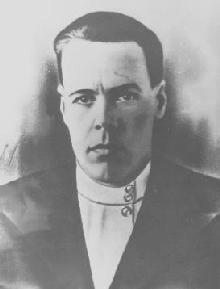
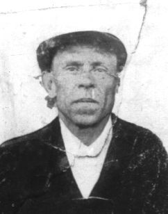
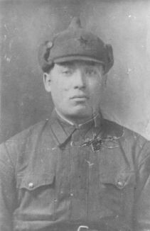
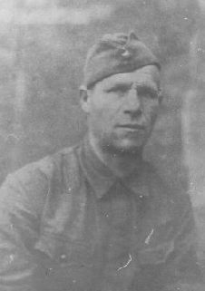
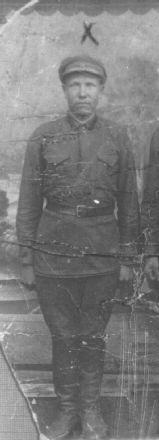
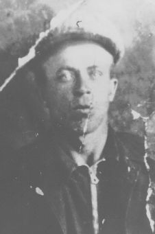
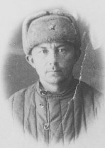

... а мы идем искать ровесников следы,
пусть вечные огни горят для каждого.

Кожевин Аристарх Михайлович
|
 |
телефонист 932 ап 375 сд Уроженец Свердловской области, р.Артеновский, пос. Егоршино. Мобилизован Егоринским РВК Пропал без вести 22.01.42 г. (ЦАМО, фонд 375сд, оп.2, д.7) Найден в овраге у д. Коростелево Ржевского р-на 7.11.89, |
Боярских Петр Кузьмич
|
 |
рядовой 932 ап 375 сд Год рожд. 1904 Уроженец Свердловской области, Туринский р-н, Дымковский с/с, д. Березово. Пропал без вести 22.01.42 г. (ЦАМО, фонд 375сд, оп.2, д.7) Найден в овраге у д. Коростелево Ржевского р-на в мае 1990 г., |
Вагин Максим Никитич
|
 |
красноармеец 932 ап 375 сд Год рожд. 1913 Уроженец Свердловской области, Краснополянский р-н, Любенский с/с, д. Щербачиха. Пропал без вести 22.01.42 г. в бою у дер. Ново-Коростелево (ЦАМО, фонд 375сд, оп.2, д.7) Найден в овраге у д. Коростелево Ржевского р-на в 30.07.91 г., |
Дрягин Александр Никитич
|
 |
красноармеец Год рожд. 1902 Уроженец Свердловской области, г. Полевской. Пропал без вести в марте 1942 г. (алфавитная картотека ЦАМО) Найден в овраге у д. Коростелево Ржевского р-на, |
Тилиликин Ефрем Наумович
|
 |
красноармеец, ездовой 932 сп 375 сд Год рожд. 1912 Уроженец Смоленской области, Петровичевский р-н, Корободянский с/с. Призван Слободотуринским РВК Свердловской области. Пропал без вести в 22.01.42 г. в бою у д. Ново-Коростелево (ЦАМО, фонд 375сд, оп.2, д.7) Найден в овраге у д. Коростелево Ржевского р-на, |
Чуфаров Сергей Константинович
|
 |
красноармеец, ездовой 932 сп 375 сд Год рожд. 1910 Уроженец Свердловской области, Туринский р-н, Бушлаковский с/с, д. Усольсы. Призван Слободотуринским РВК Свердловской области. Пропал без вести в 22.01.42 г. в бою у д. Ново-Коростелево (ЦАМО, фонд 375сд, оп.2, д.7) Найден в овраге у д. Коростелево Ржевского р-на 7.11.89, |
Рычков Яков Петрович
|
 |
красноармеец, ездовой 932 сп 375 сд Год рожд. Уроженец . Призван . Найден в августе 1995 г. около д. Толстиково Ржевского р-на, |